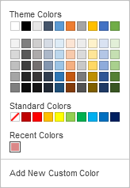
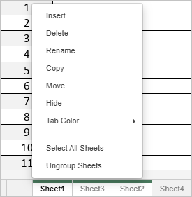

Manage sheets
By default, a newly created spreadsheet has a single sheet. The simplest way to add a new sheet into the Spreadsheet Editor is to click the Plus button located to the right of the Sheet Navigation buttons in the left lower corner.
Another way to add a new sheet is to:
- Right-click the sheet tab after which you wish to insert a new one.
- Select the Insert option from the right-click menu.
A new sheet will be inserted after the selected one.
To activate the required sheet, use the sheet tabs in the bottom left corner of each spreadsheet.
If you have a lot of sheets, you can find the necessary one by using the Sheet Navigation buttons situated in the bottom left corner.
To delete an unnecessary sheet:
- Right-click the sheet tab you wish to delete.
- Select the Delete option from the right-click menu.
The selected sheet will be deleted from the current spreadsheet.
To rename an existing sheet:
- Double-click the sheet tab you wish to rename.
- Enter a new name and press Enter.
or
- Switch to the sheet you want to rename.
- Go to the Home tab and click the Format button.
- Select the Rename sheet option.
- Enter a new name and press Enter.
The selected sheet name will be changed.
To move or copy an existing sheet:
- Right-click the sheet tab you wish to move.
- Select the Move or copy option from the right-click menu.
- Select the required workbook using the Spreadsheet drop-down menu.
-
Select the sheet before which you wish to insert the selected one, or use the Move to end option to move the selected sheet after all the existing ones.
Or simply drag the necessary sheet tab and drop it to a new location. The selected sheet will be moved.
-
Mark the Create a copy checkbox if you want to create a copy of the moved sheet.
Alternatively, press and hold down the Ctrl key and drag the sheet tab to the right to duplicate it and move the copy to the location you need.
You can also manually drag and drop a sheet from one book to another. To do this, select the sheet you want to move and drag it to the sheet bar of another book. For example, you can drag a sheet from the online editor book to the desktop one:

In this case, the sheet from the original spreadsheet will be deleted.
Currently, it's not possible to drag and drop sheets to a new workbook in Desktop Editors on Linux.
To hide the sheets you do not need at the moment:
- Right-click the sheet tab you wish to hide.
- Select the Hide option from the right-click menu.
or
- Go to the Home tab and click the Format button.
- Select the Hide → Sheets option.
To display the hidden sheet tab:
- Right-click any sheet tab.
- Open the Hidden list and select the sheet tab you wish to display.
or
- Go to the Home tab and click the Format button.
- Select the Show → Hidden sheets option and choose the sheet tab you wish to display.
To differentiate the sheets, you can assign different colors to the sheet tabs. To do that:
- Right-click the sheet tab you wish to assign a color to.
-
Select the Tab Color option from the right-click menu.
Alternatively, go to the Home tab → click the Format button → Tab color.
-
Select any color in the available palettes:

- Theme Colors - the colors that correspond to the selected color scheme of the spreadsheet.
- Standard Colors - the default colors set.
-
Custom Color - click this caption if there is no needed color in the available palettes. Select the necessary color range moving the vertical color slider and set the specific color by dragging the color picker within the large square color field. Once you select a color with the color picker, the appropriate RGB and sRGB color values will be displayed in the fields on the right. You can also specify a color on the base of the RGB color model by entering the necessary numeric values into the R, G, B (red, green, blue) fields or enter the sRGB hexadecimal code into the field marked with the # sign. The selected color will appear in the New preview box. If the object was previously filled with any custom color, this color is displayed in the Current box, so you can compare the original and modified colors. When the color is specified, click the Add button:

The custom color will be applied to the selected tab and added to the Custom color palette.
You can work with multiple sheets simultaneously:
- Select the first sheet you want to include in the group.
- Press and hold the Shift key to select several adjacent sheets you want to group, or use the Ctrl key to select several non-adjacent sheets you want to group.
- Right-click one of the selected sheet tabs to open the contextual menu.
-
Choose the necessary option from the menu:

- Insert — to insert the same number of new blank sheets as in the selected group.
- Delete — to delete all the selected sheets at once (you cannot delete all sheets in the workbook, as the workbook must contain at least one visible sheet).
- Rename — this option can be applied to each separate sheet only.
- Move or copy — to move all the selected sheets at once and paste them to the selected place, or to create copies of all the selected sheets at once and paste them to the selected place.
- Hide — to hide all the selected sheets at once (you cannot hide all sheets in the workbook, as the workbook must contain at least one visible sheet).
- Tab color — to assign the same color to all the selected sheet tabs at once.
- Select All Sheets — to select all the sheets in the current workbook.
-
Ungroup Sheets — to ungroup the selected sheets.
It's also possible to ungroup sheets by double-clicking on a sheet that is included in the group, or by clicking any sheet that is not included in the group.
To learn more about protecting sheets, please refer to the following article.